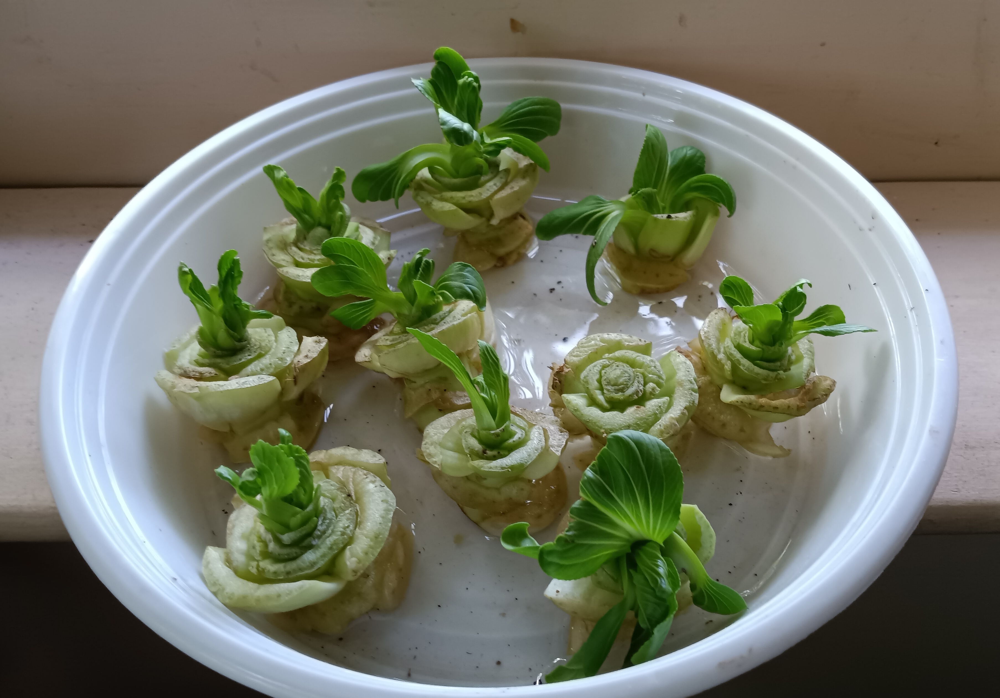
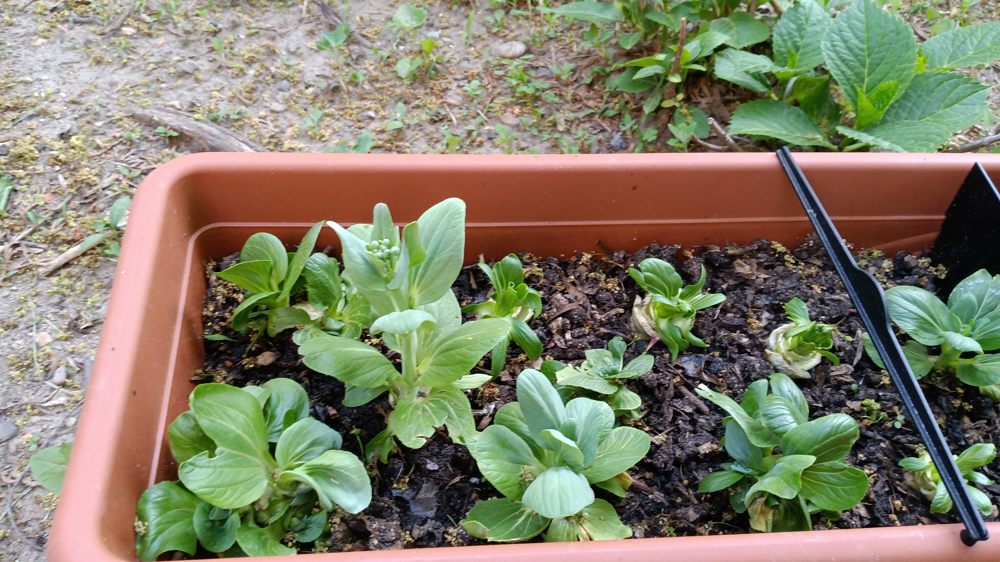

Farm to Table
I would like to encourage you to grow your own food


What’s another way to say farm to table?
In simple terms food that comes directly from farms and goes straight to the table to be consumed eliminating middleman like a marketplace and grocery etc.
A. Problem #1:
In certain communities due to economic status foods are not available and provided for nutritious well-being.
B. Problem #2:
If you’re depleting the soil and depleting the soil. Every time you have to grow a new vegetable, you have to add more nutrients. That is not a sustainable act. The disruption in agricultural practices using harmful chemicals, fertilizers, and pesticides.
These pesticides also produce an over production of food resulting in food waste.
The long-term effect of pesticides and fertilizers on someone’s body can do harm in the long run.
Solution #1:
#1 Growing you’re your food.
#2 Local ingredients should be used to support farmers nearby.
By growing things that are in season.
We should shift our focus to local, seasonal, and sustainable foods whenever possible.
We shop at the farmer’s market.
We use our local food producers, food growers regionally and
We make every effort to prepare things from scratch. This way we know what goes into the food we produce.
When we don’t source from
out of county or very long distances
then we’re saving a lot of fuel petroleum and the carbon footprint is minimized when we source like that.
What are the benefits from gardening?
According to psychologytoday.com, online the article 10 Mental Health Benefits of Gardening
here are some examples:
Developing a Growth Mindset
Physical Exercise
Reducing Stress
Eating Healthily
Food is an essential part of nurturing our bodies:
Yet approximately 11% of people in NYC are food insecure.
I encourage you to listen:
Explore Your Relationship With Food.
An opportunity to reframe an experience:
A Sustainable Act:
when you’re farming, taking your scraps from all your vegetables, or from your farmers’ market when they no longer have the need for the tops of carrots, for example. When they don’t want the tops of something you save that and bring it back to compost it.
Then it becomes the nutrients that go back into the soil.
That is a sustainable act.
Solution #2:
Persuade farmers to grow organic.
We reduce the exposure to pesticides.
Human side effects of pesticide exposure usage are:
eye and skin irritations:
such as burning, itching, and rash.
Insecticides cause the greatest number
of pesticide poisonings in the
United States.
The most serious pesticide poisonings
usually result from acute exposure:
Headache
Excessive salivation and tearing
Muscle Twitching
Nausea
Diarrhea
Respiratory Depression
Seizures
Loss of Consciousness
Pinpoint Pupils
Malaise
Muscle Weakness
Dizziness
Sweating
Vomiting
Abdominal Pain
Nervous System Depression
Pulmonary edema in serious cases.
Irritating to skin and upper respiratory tract.
Contact dermatitis and allergic reactions--asthma.
Seek medical attention and be on high alert for the early signs and symptoms of pesticide poisoning in yourself and others.
These often occur immediately after exposure, affecting those who have asthma.
Respiratory illness.
Sustainable farming:
is growing things that are in season. Growing without pesticide so that you don’t have run off to the local area, and not producing more things than you need, you don’t want food waste.
According to happilyunprossed.com, and consumerreports.org, and eatingwell.com
Starting with the codes that began with a sticker that has a digit code on it. This number on fruits and vegetables;
PLU stands for:
Price-Lookup.
PLU gives information on how food is grown:
Organic
Genetically Modified
Conventionally
This is an example of planting baby bok choy grown from the bottoms that were cut off.
You can follow this website:
How to grow bok choy